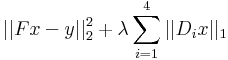
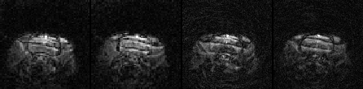
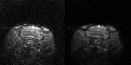
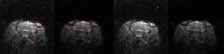
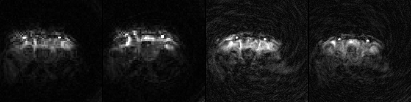
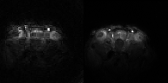
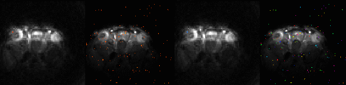

This page illustrates some material that is challenging to convey in PDF format and gives a telegraphic summary of the work. For everything else, please refer to the report
It is well known that ''compressed sensing'' can be used to reconstruct MRI images from undersampled data. This undersampling can be used to improve temporal resolution (reduce scan time). It can also be used to improve spatial resolution (by focusing sampling on the high spatial frequencies). This is what we did in this project, with functional MRI (fMRI) as an application.
To perform the reconstruction, we used a simple TV regularization (across all four dimensions):

Experiments
In these experiments we acquired the same number of samples (same scan time), but focused sampling on higher spatial frequencies. Each example shows ''acquisition'' -- raw aliased image (a least-l2-norm reconstruction), ''reconstruction'' -- result of our sparse-reconstruction-method, and the ''activation map'' - the image that the fMRI setting is actually interested in.
2x undersampling (2.4 matrix size increase)
Acquisition

Images acquired with 2.4 matrix size increase (2x undersampling relative to full acquisition).
left pair: 70x70x32 standard acquisition (500x500x500 um3 ) right pair: 110x110x32 CS acquisition (320x320x500 um3) Reconstruction

left: 70x70x32 reconstruction (MIP)
right: 110x110x32 reconstruction (CS followed by MIP)
Activation map

left: coherence comparison, right: phase comparison
left pair: 70x70x32, right pair: 110x110x32
3x undersampling (5.7 matrix size increase)
Acquisition

left: 70x70x32 standard acquisition (500x500x500 um3)
right: 167x167x32 CS acquisition (210x210x500 um3)
Notice the aliasing artifacts in the CS acquisition!
Reconstruction

left: 70x70x32 reconstruction (MIP)
right: 167x167x32 reconstruction (CS followed by MIP) Activation map

left: coherence comparison, right: phase comparison. left pair: 70x70x32, right pair: 167x167x32
Notice that the activation pattern is much more specific in the high resolution case (albeit somewhat more noisy).